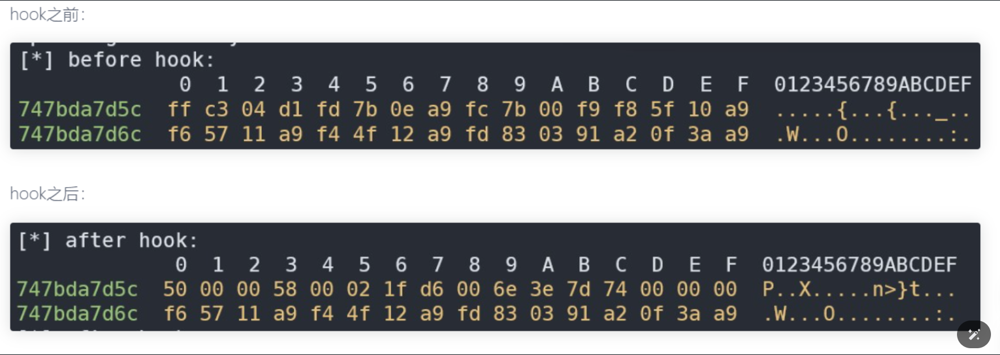
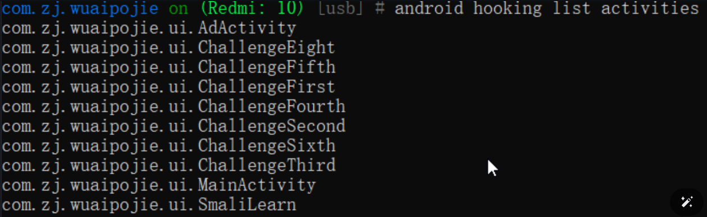

安卓Frida逆向与抓包实战笔记 Frida原理及重要组件 frida注入的原理就是找到目标进程，使用ptrace跟踪目标进程获取mmap在目标进程申请一段内存空间将在目标进程中找到存放frida-agent-32/64.so的空间启动执行各种操作由agent去实现。
组件名称
功能描述
frida-gum
提供了inline-hook的核心实现，包含代码跟踪模块Stalker，用于内存访问监控的MemoryAccessMonitor，以及符号查询、栈回溯实现、内存扫描、动态代码生成和重定位等功能。
frida-core
fridahook的核心、具有进程注入、进程间通信、会话管理、脚本生命周期管理等功能，屏蔽部分底层的实现细节并给最终用户提供开箱即用的操作接口。包含frida-server、frida-gadget、frida-agent、frida-helper、frida-inject等关键模块和组件，以及之间的互相通信底座。
frida-gadget
本身是一个动态库，可以通过重打包修改动态库的依赖或者修改smali代码去实现向三方应用注入gadget，从而实现frida的持久化或免root。
frida-server
本质上是一个二进制文件，类似于前面学习到的Android_server，需要在目标设备上运行并转发端口，在Frida hook中起到关键作用。
操作模式
操作模式
描述
优点
主要用途
CLI（命令行）模式
通过命令行直接将JavaScript脚本注入进程中，对进程进行操作
便于直接注入和操作
在较小规模的操作或者需求比较简单的场景中使用
RPC模式
使用python进行JavaScript脚本的注入工作，实际对进程进行操作的还是JavaScript脚本，可以通过RPC传输给python脚本来进行复杂数据处理
在对复杂数据的处理上可以通过RPC传输给Python脚本来进行，有利于减少被注入进程的性能损耗
在app已经启动，或者我们只关心特定时刻或者特定功能的行为时使用
注入模式与启动命令
注入模式
描述
命令或参数
优点
主要用途
Spawn模式
将启动App的权限交由Frida来控制，即使目标App已经启动，在使用Frida注入程序时还是会重新启动app
在CLI模式中，Frida通过加上 -f 参数指定包名以spawn模式操作app
适合于需要在app启动时即进行注入的场景，可以在APP启动时即捕获其行为
当需要监控app从启动开始的所以行为时使用
Attach模式
在目标app已经启动的情况下，frida通过ptrace注入程序从而执行Hook的操作
在CLI模式中，如果不添加 -f 参数，则默认会通过attach模式注入App
适合于已经运行的app，捕获重新启动app，对用户体验影响较小
在app已经启动，或者我们只关心特定时刻或特定功能的行为时使用
Spawn模式
1 frida -U -f 进程名 -l hook_java.js
attach模式
1 frida -U 进程名 -l hook_java.js
基础语法
api名称
描述
Java.use(className)
获取指定的java类并使其在javascript代码中可用
Java.perform(callback)
确保回调函数在Java的主线程上执行
Java.choose(className, callbacks)
枚举指定类的所有实例
Java.cast(obj, cls)
将一个Java对象转换成另一个Java类的实例
Java.enumerateLoadedClasses(callbacks)
枚举进程中存在的所以Java类。
Java.enumerateClassLoaders(callbacks)
枚举进程中存在的所以Java类加载器
Java.enumerateMethods(targetClassMethod)
枚举指定类的所有方法
日志输出语法区别
日志方法
描述
区别
console.log()
使用Javascript直接进行日志打印
多用于在CLI模式中，console.log()直接输出到命令行界面，使用户可以实时查看。在RPC模式中，console.log()同样输出在命令行，但啃被python脚本的输出内容掩盖。
send()
frida的专有方法，用于发送数据或日志到外部python脚本
多用于RPC模式中，它允许Javascript脚本发送数据到python脚本，python脚本可以进一步处理或记录这些数据。
Hook普通方法、打印参数和修改返回值
1 2 3 4 5 6 7 8 9 10 11 12 13 14 15 16 17 hookTest1 () {var utils = Java.use("类名" );123 ;456 ;var retval = this .method(a, b);return retval;
Hook重载参数
1 2 3 4 5 6 7 8 9 10 11 12 13 function hookTest2 (var utils = Java .use ("com.zj.wuaipojie.Demo" );Inner .overload ('com.zj.wuaipojie.Demo$Animal' ,'java.lang.String' ).implementation = function (a，b ){"aaaaaaaaaa" ;this .Inner (a,b);console .log (b);
Hook构造函数
1 2 3 4 5 6 7 8 9 function hookTest3 (var utils = Java .use ("com.zj.wuaipojie.Demo" );$init .overload ('java.lang.String' ).implementation = function (str ){console .log (str);"52" ;this .$init(str);
Hook字段
1 2 3 4 5 6 7 8 9 10 11 12 13 14 15 16 17 18 19 20 21 22 function hookTest5 (Java .perform (function (var utils = Java .use ("com.zj.wuaipojie.Demo" );staticField .value = "我是被修改的静态变量" ;console .log (utils.staticField .value );Java .choose ("com.zj.wuaipojie.Demo" , {onMatch : function (obj ){_privateInt .value = "123456" ; privateInt .value = 9999 ;onComplete : function (
hook内部类
1 2 3 4 5 6 7 8 9 10 11 function hookTest6 (Java .perform (function (var innerClass = Java .use ("com.zj.wuaipojie.Demo$innerClass" );console .log (innerClass);$init .implementation = function (console .log ("eeeeeeee" );
主动调用（静态方法）
1 2 3 4 5 6 7 function hookTest7 (Java .perform (function (var ClassName = Java .use ("com.zj.wuaipojie.Demo" ); var ret = ClassName .privateFunc ("zzzzzz" );console .log (ret);
主动调用（非静态方法）
1 2 3 4 5 6 7 8 9 10 11 12 13 14 15 16 function hookTest8 (Java .perform (function (var ret = null ;Java .perform (function (Java .choose ("com.zj.wuaipojie.Demo" ,{ onMatch :function (instance ){privateFunc ("aaaaaaa" ); onComplete :function (
Frida-Native-Hook Process、Module、Memory基础
process
Process 对象代表当前被Hook的进程，能获取进程的信息，枚举模块，枚举范围等
API
含义
process.id
返回附加目标进程的PID
process.isDebuggerAttached()
检测当前是否对目标程序已经附加
process.enumerateModuless()
枚举当前加载的模块，返回模块对象的数组
process.enumerateThreads()
枚举当前所有的线程，返回包含id，state，context等属性的对象数组
Module
Module对象代表一个加载到进程的模块（例如，在Windows上的DLL，或者Linux/Android上的.so文件），能查询模块的信息，如模块的基地址、名称、导入\导出的函数等。
API
含义
Module.load()
加载指定so文件，返回一个Module对象
enumerateImports()
枚举所有Import库函数，返回Module数组对象
enumerateExports()
枚举所有Export库函数，返回Module数组对象
enumerateSymbols()
枚举所有Symbol库函数，返回Module数组对象
Module.findExportByName(exportName)、Module.getExportByName(exportName)
寻找指定so中export库中的函数地址
Module.findBaseAddress(name)、Module.getBaseAddress(name)
返回so的基地址
Memory
Memory是一个工具对象，提供直接读取和修改进程内存的功能，能够读取特定地址的值、写入数据、分配内存等
方法
功能
Memory.copy()复制内存
Memory.scan()搜索内存中特定模式的数据
Memory.scanSync()同上，但返回多个匹配的数据
Memory.alloc()在目标进程的堆上申请指定大小的内存，返回一个NativePointer
Memory.writeByteArray()将字节数组写入一个指定内存
Memory.readByteArray读取内存
枚举导入导出表
导出表（Export Table） ：列出了库中可以被其他程序或库访问的所有公开函数和符号的名称。
导入表（Import Table） ：列出了库需要从其他库中调用的函数和符号的名称。
简而言之，导出表告诉其他程序：“这些是我提供的功能。”，而导入表则表示：“这些是我需要的功能。”。
1 2 3 4 5 6 7 8 9 10 11 12 13 14 15 16 17 18 function hookTest1 (Java .perform (function (var imports = Module .enumerateImports ("lib52pojie.so" );for (var i =0 ; i < imports.length ;i++){if (imports[i].name == "vip" ){console .log (JSON .stringify (imports[i])); console .log (imports[i].address );var exports = Module .enumerateExports ("lib52pojie.so" );for (var i =0 ; i < exports .length ;i++){console .log (JSON .stringify (exports [i]));
Native函数的基础Hook打印
1 2 3 4 5 6 7 8 9 10 11 12 13 14 15 16 17 18 19 20 21 22 23 24 25 26 function hookTest2 (Java .perform (function (var helloAddr = Module .findExportByName ("lib52pojie.so" ,"Java_com_zj_wuaipojie_util_SecurityUtil_checkVip" );console .log (helloAddr); if (helloAddr != null ){Interceptor .attach (helloAddr,{onEnter : function (args ){ console .log (args[0 ]); console .log (this .context .x1 ); console .log (args[1 ].toInt32 ()); console .log (args[2 ].readCString ()); console .log (hexdump (args[2 ])); onLeave : function (retval ){ console .log (retval);console .log ("retval" ,retval.toInt32 ());
1 2 3 4 5 6 7 8 9 10 11 12 13 14 15 16 17 18 19 20 21 22 23 24 25 function hookTest2 (Java .perform (function (var helloAddr = Module .findExportByName ("lib52pojie.so" ,"Java_com_zj_wuaipojie_util_SecurityUtil_vipLevel" );if (helloAddr != null ){Interceptor .attach (helloAddr,{onEnter : function (args ){ var jString = Java .cast (args[2 ], Java .use ('java.lang.String' ));console .log ("参数:" , jString.toString ());var JNIEnv = Java .vm .getEnv ();var originalStrPtr = JNIEnv .getStringUtfChars (args[2 ], null ).readCString (); console .log ("参数:" , originalStrPtr); onLeave : function (retval ){ var returnedJString = Java .cast (retval, Java .use ('java.lang.String' ));console .log ("返回值:" , returnedJString.toString ());
Native函数的基础Hook修改
1 2 3 4 5 6 7 8 9 10 11 12 13 14 15 16 17 18 19 20 function hookTest3 (Java .perform (function (var helloAddr = Module .findExportByName ("lib52pojie.so" ,"func_four" );console .log (helloAddr);if (helloAddr != null ){Interceptor .attach (helloAddr,{onEnter : function (args ){ 0 ] = ptr (1000 ); console .log (args[0 ]);onLeave : function (retval ){ replace (20000 ); console .log ("retval" ,retval.toInt32 ());
1 2 3 4 5 6 7 8 9 10 11 12 13 14 15 16 17 18 19 20 21 22 23 24 25 26 27 28 function hookTest2 (Java .perform (function (var helloAddr = Module .findExportByName ("lib52pojie.so" ,"Java_com_zj_wuaipojie_util_SecurityUtil_vipLevel" );if (helloAddr != null ){Interceptor .attach (helloAddr,{onEnter : function (args ){ var JNIEnv = Java .vm .getEnv ();var originalStrPtr = JNIEnv .getStringUtfChars (args[2 ], null ).readCString (); console .log ("参数:" , originalStrPtr);var modifiedContent = "至尊" ;var newJString = JNIEnv .newStringUtf (modifiedContent);2 ] = newJString; onLeave : function (retval ){ var returnedJString = Java .cast (retval, Java .use ('java.lang.String' ));console .log ("返回值:" , returnedJString.toString ());var JNIEnv = Java .vm .getEnv ();var modifiedContent = "无敌" ;var newJString = JNIEnv .newStringUtf (modifiedContent);replace (newJString);
SO基址的获取方式
1 2 3 var moduleAddr1 = Process .findModuleByName ("lib52pojie.so" ).base ; var moduleAddr2 = Process .getModuleByName ("lib52pojie.so" ).base ; var moduleAddr3 = Module .findBaseAddress ("lib52pojie.so" );
Hook未导出函数与函数地址计算
1 2 3 4 5 6 7 8 9 10 11 12 13 14 15 16 17 18 19 function hookTest6 (Java .perform (function (var soAddr = Module .findBaseAddress ("lib52pojie.so" );console .log (soAddr);var funcaddr = soAddr.add (0x1071C ); console .log (funcaddr);if (funcaddr != null ){Interceptor .attach (funcaddr,{onEnter : function (args ){ onLeave : function (retval ){ console .log (retval.toInt32 ());
函数地址计算
安卓里一般32 位的 so 中都是thumb指令，64 位的 so 中都是arm指令
通过IDA里的opcode bytes来判断，arm 指令为 4 个字节(options -> general -> Number of opcode bytes (non-graph) 输入4)
thumb 指令，函数地址计算方式： so 基址 + 函数在 so 中的偏移 + 1
Frida写数据
1 2 3 4 5 6 7 8 var file_path = "/data/user/0/com.zj.wuaipojie/test.txt" ;var file_handle = new File (file_path, "wb" );if (file_handle && file_handle != null ) {write (data); flush (); close ();
Frida_inlineHook与读写汇编
什么是inlinehook？ Inline hook（内联钩子）是一种在程序运行时修改函数执行流程的技术。它通过修改函数的原始代码，将目标函数的执行路径重定向到自定义的代码段，从而实现对目标函数的拦截和修改。 简单来说就是可以对任意地址的指令进行hook读写操作
Frida的inlinehook不是太稳定，崩溃是基操，另外新版的frida兼容性会比较好
1 2 3 4 5 6 7 8 9 10 11 12 13 14 15 16 17 function inline_hook (var soAddr = Module .findBaseAddress ("lib52pojie.so" );if (soAddr) {var func_addr = soAddr.add (0x10428 );Java .perform (function (Interceptor .attach (func_addr, {onEnter : function (args ) {console .log (this .context .x22 ); this .context .x22 = ptr (1 ); onLeave : function (retval ) {
将地址的指令解析成汇编
1 2 3 var soAddr = Module .findBaseAddress ("lib52pojie.so" );var codeAddr = Instruction .parse (soAddr.add (0x10428 ));console .log (codeAddr.toString ());
arm转hex
1 2 3 4 5 6 7 8 9 10 11 12 13 14 15 16 17 18 19 20 21 22 23 var soAddr = Module .findBaseAddress ("lib52pojie.so" );var codeAddr = soAddr.add (0x10428 );Memory .patchCode (codeAddr, 4 , function (code ) {const writer = new Arm64Writer (code, { pc : codeAddr });putBytes (hexToBytes ("20008052" ));flush ();function hexToBytes (str ) {var pos = 0 ;var len = str.length ;if (len % 2 != 0 ) {return null ;2 ;var hexA = new Array ();for (var i = 0 ; i < len; i++) {var s = str.substr (pos, 2 );var v = parseInt (s, 16 );push (v);2 ;return hexA;
普通函数与jni函数的主动调用
数据类型
描述
void
无返回值
pointer
指针
int
整数
long
长整数
char
字符
float
浮点数
double
双精度浮点数
bool
布尔值
1 2 3 4 5 6 7 var funcAddr = Module .findBaseAddress ("lib52pojie.so" ).add (0x1054C );var aesAddr = new NativeFunction (funcAddr , 'pointer' , ['pointer' , 'pointer' ]);var encry_text = Memory .allocUtf8String ("OOmGYpk6s0qPSXEPp4X31g==" ); var key = Memory .allocUtf8String ('wuaipojie0123456' ); console .log (aesAddr (encry_text ,key).readCString ());
frida bypass D-Bus检测
D-Bus是一种进程间通信(IPC)和远程过程调用(RPC)机制,最初是为Linux开发的,目的是用一个统一的协议替代现有的和竞争的IPC解决方案。
1 2 3 4 5 6 7 8 9 10 11 12 13 14 15 16 17 18 19 20 21 22 23 24 25 26 27 28 29 30 31 32 33 34 35 36 37 38 39 40 41 42 43 bool check_dbus () struct sockaddr_in sa; int sock; char res[7 ]; for (int i = 0 ; i <= 65535 ; i++) { socket (AF_INET, SOCK_STREAM, 0 ); htons (i); if (connect (sock, (struct sockaddr*)&sa, sizeof (sa)) != -1 ) { "ZJ595" , "FRIDA DETECTION [1]: Open Port: %d" , i); memset (res, 0 , 7 ); send (sock, "\x00" , 1 , 0 ); send (sock, "AUTH\r\n" , 6 , 0 ); usleep (100 ); if (recv (sock, res, 6 , MSG_DONTWAIT) != -1 ) { if (strcmp (res, "REJECT" ) == 0 ) { close (sock); return true ; close (sock); return false ;
检测fd
/proc/pid/fd 目录的作用在于提供了一种方便的方式来查看进程的文件描述符信息，这对于调试和监控进程非常有用。通过查看文件描述符信息，可以了解进程打开了哪些文件、网络连接等，帮助开发者和系统管理员进行问题排查和分析工作。
1 2 3 4 5 6 7 8 9 10 11 12 13 14 15 16 17 18 19 20 21 22 23 24 25 26 27 28 29 30 31 32 bool check_fd () NULL ; struct dirent *entry; char link_name[100 ]; char buf[100 ]; bool ret = false ; if ((dir = opendir ("/proc/self/fd/" )) == NULL ) { LOGI (" %s - %d error:%s" , __FILE__, __LINE__, strerror (errno)); else { readdir (dir); while (entry) { switch (entry->d_type) { case DT_LNK: sprintf (link_name, "%s/%s" , "/proc/self/fd/" , entry->d_name); readlink (link_name, buf, sizeof (buf)); if (strstr (buf, "frida" ) || strstr (buf, "gum-js-loop" ) || strstr (buf, "gmain" ) || strstr (buf, "-gadget" ) || strstr (buf, "linjector" )) { LOGI ("check_fd -> find frida:%s" , buf); true ; break ; default : break ; readdir (dir); closedir (dir); return ret;
检测文件
众所周知frida我们一般都会放在data/local/tmp目录下，旧版fridaserver端运行时都会释放到re.frida.server，所以这里在旧版也会被当做一个检测点，而新版已不再释放
检测map
字段
描述
u0_a504
用户ID和应用ID：在Android系统中，u0代表系统用户（user 0），而a504是该应用在用户0下的唯一标识符。
28082
PID（进程ID）：该进程在操作系统中的标识符。
1935
PPID（父进程ID）：该进程的父进程的PID。
6511212
虚拟内存：进程使用的虚拟内存大小，通常以字节为单位。
125728
共享内存：进程使用的共享内存大小，同样以字节为单位。
0
CPU时间/线程数：这通常表示进程的CPU时间或者是线程数，具体含义取决于ps命令的输出格式。
S
状态：其中S代表睡眠状态（Sleeping），即进程没有在执行，而是在等待某些事件或资源。
/proc/self/maps 是一个特殊的文件，它包含了当前进程的内存映射信息。当你打开这个文件时，它会显示一个列表，其中包含了进程中每个内存区域的详细信息。这些信息通常包括：
起始地址（Start Address）
结束地址（End Address）
权限（如可读、可写、可执行）
共享/私有标志（Shared or Private）
关联的文件或设备（如果内存区域是文件映射的）
内存区域的偏移量
内存区域的类型（如匿名映射、文件映射、设备映射等）frida-agent-64.so、frida-agent-32.so 等文件。
1 2 3 4 5 6 7 8 9 10 11 12 13 14 15 16 17 18 19 20 21 22 23 24 bool check_maps () char line[512 ]; fopen ("/proc/self/maps" , "r" ); if (fp) { while (fgets (line, sizeof (line), fp)) { if (strstr (line, "frida" ) || strstr (line, "gadget" )) { fclose (fp); return true ; fclose (fp); else { return false ;
绕过的方式
anti脚本
1 2 3 4 5 6 7 8 9 10 11 12 13 14 15 16 17 18 19 20 21 22 23 24 25 26 27 28 29 30 31 32 33 34 35 36 37 38 39 40 41 42 43 44 45 function anti_maps (var pt_strstr = Module .findExportByName ("libc.so" , 'strstr' ); var pt_strcmp = Module .findExportByName ("libc.so" , 'strcmp' ); Interceptor .attach (pt_strstr, { onEnter : function (args ) { var str1 = args[0 ].readCString (); var str2 = args[1 ].readCString (); if (str2.indexOf ("REJECT" ) !== -1 || str2.indexOf ("frida" ) !== -1 ) { this .hook = true ; onLeave : function (retval ) { if (this .hook ) { replace (0 ); Interceptor .attach (pt_strcmp, { onEnter : function (args ) { var str1 = args[0 ].readCString (); var str2 = args[1 ].readCString (); if (str2.indexOf ("REJECT" ) !== -1 || str2.indexOf ("frida" ) !== -1 ) { this .hook = true ; onLeave : function (retval ) { if (this .hook ) { replace (0 );
重定向maps
1 2 3 4 5 6 7 8 9 10 11 12 13 14 15 16 17 18 19 20 21 22 23 24 25 26 27 28 29 30 31 32 33 34 35 36 37 38 39 40 41 42 43 44 45 function mapsRedirect (var FakeMaps = "/data/data/com.zj.wuaipojie/maps" ; const openPtr = Module .getExportByName ('libc.so' , 'open' ); const open = new NativeFunction (openPtr, 'int' , ['pointer' , 'int' ]); var readPtr = Module .findExportByName ("libc.so" , "read" ); var read = new NativeFunction (readPtr, 'int' , ['int' , 'pointer' , "int" ]); var MapsBuffer = Memory .alloc (512 ); var MapsFile = new File (FakeMaps , "w" ); Interceptor .replace (openPtr, new NativeCallback (function (pathname, flag ) { var FD = open (pathname, flag); var ch = pathname.readCString (); if (ch.indexOf ("/proc/" ) >= 0 && ch.indexOf ("maps" ) >= 0 ) { console .log ("open : " , pathname.readCString ()); while (parseInt (read (FD , MapsBuffer , 512 )) !== 0 ) { var MBuffer = MapsBuffer .readCString (); MBuffer = MBuffer .replaceAll ("/data/local/tmp/re.frida.server/frida-agent-64.so" , "FakingMaps" ); MBuffer = MBuffer .replaceAll ("re.frida.server" , "FakingMaps" ); MBuffer = MBuffer .replaceAll ("frida-agent-64.so" , "FakingMaps" ); MBuffer = MBuffer .replaceAll ("frida-agent-32.so" , "FakingMaps" ); MBuffer = MBuffer .replaceAll ("frida" , "FakingMaps" ); MBuffer = MBuffer .replaceAll ("/data/local/tmp" , "/data" ); MapsFile .write (MBuffer ); var filename = Memory .allocUtf8String (FakeMaps ); return open (filename, flag); return FD ; 'int' , ['pointer' , 'int' ]));
用eBPF来hook系统调用并修改参数实现目的，使用bpf_probe_write_user向用户态函数地址写内容直接修改参数
1 2 char placeholder[] = "/data/data/com.zj.wuaipojie/maps" ; void *)addr, placeholder, sizeof (placeholder));
检测status(线程名)
1 2 ls /proc/pid/task 列出线程id cat /proc/pid/task/线程id /status
在 /proc/pid/task 目录下，可以通过查看不同的线程子目录，来获取进程中每个线程的运行时信息。这些信息包括线程的状态、线程的寄存器内容、线程占用的CPU时间、线程的堆栈信息等。通过这些信息，可以实时观察和监控进程中每个线程的运行状态，帮助进行调试、性能优化和问题排查等工作。
在某些app中就会去读取 /proc/stask/线程ID/status 文件，如果是运行frida产生的，则进行反调试。例如：gmain/gdbus/gum-js-loop/pool-frida等
gmain：Frida 使用 Glib 库，其中的主事件循环被称为 GMainLoop。在 Frida 中，gmain 表示 GMainLoop 的线程。
gdbus：GDBus 是 Glib 提供的一个用于 D-Bus 通信的库。在 Frida 中，gdbus 表示 GDBus 相关的线程。
gum-js-loop：Gum 是 Frida 的运行时引擎，用于执行注入的 JavaScript 代码。gum-js-loop 表示 Gum 引擎执行 JavaScript 代码的线程。
pool-frida：Frida 中的某些功能可能会使用线程池来处理任务，pool-frida 表示 Frida 中的线程池。
linjector 是一种用于 Android 设备的开源工具，它允许用户在运行时向 Android 应用程序注入动态链接库（DLL）文件。通过注入 DLL 文件，用户可以修改应用程序的行为、调试应用程序、监视函数调用等，这在逆向工程、安全研究和动态分析中是非常有用的。
1 2 3 4 5 6 7 8 9 10 11 12 13 14 15 16 17 18 19 20 21 22 23 24 25 26 27 28 29 30 31 32 33 34 35 36 37 38 bool check_status () opendir ("/proc/self/task/" ); struct dirent *entry; char status_path[MAX_PATH]; char buffer[MAX_BUFFER]; int found = false ; if (dir) { while ((entry = readdir (dir)) != NULL ) { if (entry->d_type == DT_DIR) { if (strcmp (entry->d_name, "." ) == 0 || strcmp (entry->d_name, ".." ) == 0 ) { continue ; snprintf (status_path, sizeof (status_path), "/proc/self/task/%s/status" , entry->d_name); if (read_file (status_path, buffer, sizeof (buffer)) == -1 ) { continue ; if (strcmp (buffer, "null" ) == 0 ) { continue ; char *line = strtok (buffer, "\n" ); while (line) { if (strstr (line, "Name:" ) != NULL ) { const char *frida_name = strstr (line, "gmain" ); if (frida_name || strstr (line, "gum-js-loop" ) || strstr (line, "pool-frida" ) || strstr (line, "gdbus" )) { true ; break ; strtok (NULL , "\n" ); if (found) break ; closedir (dir); return found;
检测inlinehook
通过Frida查看一个函数hook之前和之后的机器码，以此来判断是否被Frida的inlinehook注入。

下面的方案以内存中字节和本地对应的字节进行比较，如果不一致，那么可以认为内存中的字节被修改了，即被inlinehook了
1 2 3 4 5 6 7 8 9 10 11 12 13 14 15 16 17 18 19 20 21 22 23 24 25 26 27 28 29 30 31 32 33 34 35 36 37 38 39 40 41 42 43 44 45 46 47 48 49 50 51 52 53 54 55 56 57 58 59 60 61 62 63 64 65 66 67 #include <jni.h> #include <string> #include <dlfcn.h> #include "dlfcn/local_dlfcn.h" bool check_inlinehook () const char *lib_path; #ifdef __LP64__ "/system/lib64/libc.so" ; #else "/system/lib/libc.so" ; #endif const int CMP_COUNT = 8 ; const char *sym_name = "open" ; struct local_dlfcn_handle *handle = static_cast <local_dlfcn_handle *>(local_dlopen (lib_path)); if (!handle) { return JNI_FALSE; off_t offset = local_dlsym (handle, sym_name); local_dlclose (handle); fopen (lib_path, "rb" ); if (!fp) { return JNI_FALSE; char file_bytes[CMP_COUNT] = {0 }; fseek (fp, offset, SEEK_SET); fread (file_bytes, 1 , CMP_COUNT, fp); fclose (fp); void *dl_handle = dlopen (lib_path, RTLD_NOW); if (!dl_handle) { return JNI_FALSE; void *sym = dlsym (dl_handle, sym_name); if (!sym) { dlclose (dl_handle); return JNI_FALSE; int is_hook = memcmp (file_bytes, sym, CMP_COUNT) != 0 ; dlclose (dl_handle); return is_hook ? JNI_TRUE : JNI_FALSE;
获取hook前字节码的脚本
1 2 3 4 5 6 7 8 9 10 11 12 13 let bytes_count = 8 let address = Module .getExportByName ("libc.so" ,"open" ) let before = ptr (address) console .log ("" ) console .log ("[*] before hook: " ) console .log (hexdump (before, { offset : 0 , length : bytes_count, header : true , ansi : true
anti脚本
1 2 3 4 5 6 7 8 9 10 11 12 13 14 15 16 17 18 19 20 21 22 23 24 25 26 27 28 function hook_memcmp_addr (var memcmp_addr = Module .findExportByName ("libc.so" , "fread" ); if (memcmp_addr !== null ) { console .log ("fread address: " , memcmp_addr); Interceptor .attach (memcmp_addr, { onEnter : function (args ) { this .buffer = args[0 ]; this .size = args[1 ]; this .count = args[2 ]; this .stream = args[3 ]; onLeave : function (retval ) { console .log (this .count .toInt32 ()); if (this .count .toInt32 () == 8 ) { Memory .writeByteArray (this .buffer , [0x50 , 0x00 , 0x00 , 0x58 , 0x00 , 0x02 , 0x1f , 0xd6 ]); replace (8 ); console .log (hexdump (this .buffer )); else { console .log ("Error: memcmp function not found in libc.so" );
Syscall&SVC&自定义strstr
在用户空间和内核空间之间，有一个叫做Syscall(系统调用, system call)的中间层，是连接用户态和内核态的桥梁。这样即提高了内核的安全型，也便于移植，只需实现同一套接口即可。Linux系统，用户空间通过向内核空间发出Syscall，产生软中断，从而让程序陷入内核态，执行相应的操作。SVC(软件中断指令)指令 ：在ARM架构的系统中，svc是一条特殊的指令，它允许用户态的程序发起一个系统调用。当这条指令被执行时，CPU会从用户态切换到内核态，从而允许内核处理这个请求。
Linux操作系统是一个巨大的图书馆，而syscall就是这个图书馆的前台服务窗口。当一个应用程序（比如一个读者）需要借阅书籍（获取系统资源或服务）时，它不能直接进入图书馆的内部书架去拿书，因为那样可能会造成混乱和损坏。所以，读者需要通过前台服务窗口，也就是syscall，来请求它想要的书籍。
svc就像是图书馆前台服务窗口的内部电话。当读者通过前台窗口提出请求时，前台工作人员会通过内部电话（svc）来联系图书馆的内部工作人员，请求他们找到并提供所需的书籍。在Linux系统中，当一个程序通过syscall请求服务时，实际上是通过svc这条指令通知内核，然后由内核来处理这些请求。
首先当我们长按开机键（电源按钮）开机，此时会引导芯片开始从固化到ROM中的预设代码处执行，然后加载引导程序到RAM。然后启动加载的引导程序，引导程序主要做一些基本的检查，包括RAM的检查，初始化硬件的参数。
到达内核层的流程后，这里初始化一些进程管理、内存管理、加载各种Driver等相关操作，如Camera Driver、Binder Driver 等。下一步就是内核线程，如软中断线程、内核守护线程。下面一层就是Native层，这里额外提一点知识，层于层之间是不可以直接通信的，所以需要一种中间状态来通信。Native层和Kernel层之间通信用的是syscall，Native层和Java层之间的通信是JNI。
在Native层会初始化init进程，也就是用户组进程的祖先进程。init中加载配置文件init.rc，init.rc中孵化出ueventd、logd、healthd、installd、lmkd等用户守护进程。开机动画启动等操作。核心的一步是孵化出Zygote进程，此进程是所有APP的父进程，这也是Xposed注入的核心，同时也是Android的第一个Java进程（虚拟机进程）。
进入框架层后，加载zygote init类，注册zygote socket套接字，通过此套接字来做进程通信，并加载虚拟机、类、系统资源等。zygote第一个孵化的进程是system_server进程，负责启动和管理整个Java Framework，包含ActivityManager、PowerManager等服务。
应用层的所有APP都是从zygote孵化而来
1 2 3 4 5 6 7 8 9 10 11 12 13 14 15 16 17 18 19 20 21 22 23 24 25 26 27 28 29 30 31 32 33 34 35 36 bool anti_anti_maps () { int buf_size = 512 ; char buf[buf_size]; int fd; "/proc/self/maps" , O_RDONLY | O_CLOEXEC, 0 ); if (fd != -1 ) { while ((read_line(fd, buf, buf_size)) > 0 ) { if (strstr(buf, "frida" ) || strstr(buf, "gadget" )) { return true ; else { return false ; 0 1 )
anti脚本
1 2 3 4 5 6 7 8 9 10 11 12 13 14 15 16 17 18 19 20 21 22 23 24 25 26 27 28 29 30 31 32 33 34 35 36 37 38 39 40 41 42 43 44 45 46 47 48 49 50 51 52 53 54 55 56 57 58 59 60 61 62 63 64 65 66 67 68 69 70 71 72 73 74 75 76 77 78 79 function anti_svc (let target_code_hex; let call_number_openat; let arch = Process .arch ; if ("arm" === arch){ "00 00 00 EF" ; 322 ; else if ("arm64" === arch){ "01 00 00 D4" ; 56 ; else { console .log ("arch not support!" ); if (arch){ console .log ("\nthe_arch = " + arch); Process .enumerateRanges ('r--' ).forEach (function (range ) { if (!range.file || !range.file .path ){ return ; let path = range.file .path ; if ((!path.startsWith ("/data/app/" )) || (!path.endsWith (".so" ))){ return ; let baseAddress = Module .getBaseAddress (path); let soNameList = path.split ("/" ); let soName = soNameList[soNameList.length - 1 ]; console .log ("\npath = " + path + " , baseAddress = " + baseAddress + " , rangeAddress = " + range.base + " , size = " + range.size ); Memory .scan (range.base , range.size , target_code_hex, { onMatch : function (match ){ let code_address = match; let code_address_str = code_address.toString (); if (code_address_str.endsWith ("0" ) || code_address_str.endsWith ("4" ) || endsWith ("8" ) || code_address_str.endsWith ("c" )){ console .log ("--------------------------" ); let call_number = 0 ; if ("arm" === arch){ sub (0x4 ).readS32 ()) & 0xFFF ; else if ("arm64" === arch){ sub (0x4 ).readS32 () >> 5 ) & 0xFFFF ; else { console .log ("the arch get call_number not support!" ); console .log ("find svc : so_name = " + soName + " , address = " + code_address + " , call_number = " + call_number + " , offset = " + code_address.sub (baseAddress)); if (call_number_openat === call_number){ let target_hook_addr = code_address; let target_hook_addr_offset = target_hook_addr.sub (baseAddress); console .log ("find svc openat , start inlinehook by frida!" ); Interceptor .attach (target_hook_addr, { onEnter : function (args ){ console .log ("\nonEnter_" + target_hook_addr_offset + " , __NR_openat , args[1] = " + 1 ].readCString ()); this .new_addr = Memory .allocUtf8String ("/data/user/0/com.zj.wuaipojie/maps" ); 1 ] = this .new_addr ; console .log ("onEnter_" + target_hook_addr_offset + " , __NR_openat , args[1] = " + 1 ].readCString ()); onLeave : function (retval ){ console .log ("onLeave_" + target_hook_addr_offset + " , __NR_openat , retval = " + retval) onComplete : function (
自定义strstr
1 2 3 4 5 6 7 8 9 10 11 12 13 14 15 16 17 18 19 20 21 22 23 24 25 26 27 28 29 30 31 32 33 34 35 36 37 38 39 40 41 42 43 44 45 46 bool anti_str_maps () char line[512 ]; fopen ("/proc/self/maps" , "r" ); if (fp) { while (fgets (line, sizeof (line), fp)) { if (my_strstr (line, "frida" ) || my_strstr (line, "gadget" )) { fclose (fp); return true ; fclose (fp); else { return false ; static inline char * my_strstr (const char *s, const char *find) char c, sc; size_t len; if ((c = *find++) != '\0' ) { my_strlen (find); do { do { if ((sc = *s++) == '\0' ) return (NULL ); while (sc != c); while (my_strncmp (s, find, len) != 0 ); return ((char *)s);
objection objection是基于frida的命令行hook集合工具, 可以让你不写代码, 敲几句命令就可以对java函数的高颗粒度hook, 还支持RPC调用。可以实现诸如内存搜索、类和模块搜索、方法hook打印参数返回值调用栈等常用功能，是一个非常方便的，逆向必备、内存漫游神器。
注入命令
1 2 3 4 5 6 objection -g 包名 explorehelp ：不知道当前命令的效果是什么，在当前命令前加help 比如:help env ，回车之后会出现当前命令的解释信息jobs ：可以进行多项hook
启动前就hook
1 objection -g 进程名 explore --startup-command "android hooking watch class 路径.类名"
objection基础api
memory list modules -查看内存中加载的库
1 2 3 4 5 6 7 8 9 10 11 12 memory list modulesto this command 0 x57867c9000 40960 (40.0 KiB) /system /bin/app_process640 x72e326a000 229376 (224.0 KiB) /system /bin/linker64so 0 x72e164e000 2113536 (2.0 MiB) /system /lib64/libandroid_runtime.so so 0 x72dfa67000 81920 (80.0 KiB) /system /lib64/libbase.so so 0 x72dec1c000 643072 (628.0 KiB) /system /lib64/libbinder.so so 0 x72de269000 86016 (84.0 KiB) /system /lib64/libcutils.so so 0 x72df4cc000 692224 (676.0 KiB) /system /lib64/libhidlbase.so so 0 x72e0be1000 98304 (96.0 KiB) /system /lib64/liblog
memory list exports so名称 - 查看库的导出函数
1 2 3 4 5 6 7 8 9 10 11 12 13 14 15 16 memory list exports liblog.soType Name Addressfunction android_log_write_int32 0x72e0be77c8function android_log_write_list_begin 0x72e0be76f0function __android_log_bswrite 0x72e0be9bd8function __android_log_security 0x72e0bf2144function __android_log_bwrite 0x72e0be9a18function android_log_reset 0x72e0be75ecfunction android_log_write_string8 0x72e0be7a38function android_logger_list_free 0x72e0be8c04function __android_log_print 0x72e0be9728function __android_logger_property_get_bool 0x72e0bf2248function android_logger_get_id 0x72e0be8270function android_logger_set_prune_list 0x72e0be8948
android hooking list activities -查看内存中加载的activity /android hooking list services -查看内存中加载的services

android intent launch_activity 类名 -启动activity或service(可以用于一些没有验证的activity,在一些简单的ctf中有时候可以出奇效)
关闭ssl校验 android sslpinning disable
关闭root检测 android root disable
objection内存漫游
1 2 3 4 5 android heap search instances 类名(命令) instance enumeration complete for com.zj.wuaipojie.Demo
1 2 3 4 5 android heap execute <handle> getPublicInt(实例的hashcode+方法名)"吾爱破解" ));
android hooking list classes -列出内存中所有的类(结果比静态分析的更准确)
1 2 3 4 5 6 7 8 9 10 11 12 13 14 15 16 17 android hooking list classes .idv .palatis .xappdebug .MainApplication .idv .palatis .xappdebug .xposed .HookMain .idv .palatis .xappdebug .xposed .HookMain$a .idv .palatis .xappdebug .xposed .HookMain$b .idv .palatis .xappdebug .xposed .HookMain$c .idv .palatis .xappdebug .xposed .HookMain$d .idv .palatis .xappdebug .xposed .HookSelf .dummy .XResourcesSuperClass .dummy .XTypedArraySuperClass 10798 classes
android hooking search classes 关键类名 -在内存中所有已加载的类中搜索包含特定关键词的类
1 2 3 4 5 6 7 8 9 10 11 12 android hooking search classes wuaipojieif the expected class has not been found, it might not have been loaded yet..zj .wuaipojie .Demo .zj .wuaipojie .Demo$Animal .zj .wuaipojie .Demo$Companion .zj .wuaipojie .Demo$InnerClass .zj .wuaipojie .Demo$test $1 .zj .wuaipojie .MainApplication .zj .wuaipojie .databinding .ActivityMainBinding 38 classes
1 2 3 4 5 6 7 8 9 10 11 12 13 14 15 android hooking list class_methods com.zj .wuaipojie .ui .ChallengeSixth .zj .wuaipojie .ui .ChallengeSixth .onCreate$lambda -0 (com.zj .wuaipojie .ui .ChallengeSixth ,android.view .View).zj .wuaipojie .ui .ChallengeSixth .onCreate$lambda -1 (com.zj .wuaipojie .ui .ChallengeSixth ,android.view .View).zj .wuaipojie .ui .ChallengeSixth .onCreate$lambda -2 (com.zj .wuaipojie .ui .ChallengeSixth ,android.view .View).zj .wuaipojie .ui .ChallengeSixth .onCreate$lambda -3 (com.zj .wuaipojie .ui .ChallengeSixth ,android.view .View).zj .wuaipojie .ui .ChallengeSixth .onCreate (android.os .Bundle).lang .String com.zj .wuaipojie .ui .ChallengeSixth .hexToString (java.lang .String).lang .String com.zj .wuaipojie .ui .ChallengeSixth .unicodeToString (java.lang .String).zj .wuaipojie .ui .ChallengeSixth .toastPrint (java.lang .String).zj .wuaipojie .ui .ChallengeSixth .$r8 $lambda $1 lrkrgiCEFWXZDHzLRibYURG1h8 (com.zj .wuaipojie .ui .ChallengeSixth ,android.view .View).zj .wuaipojie .ui .ChallengeSixth .$r8 $lambda $IUqwMqbTKaOGiTaeOmvy_GjNBso (com.zj .wuaipojie .ui .ChallengeSixth ,android.view .View).zj .wuaipojie .ui .ChallengeSixth .$r8 $lambda $Kc_cRYZjjhjsTl6GYNHbgD -i6sE (com.zj .wuaipojie .ui .ChallengeSixth ,android.view .View).zj .wuaipojie .ui .ChallengeSixth .$r8 $lambda $PDKm2AfziZQo6Lv1HEFkJWkUsoE (com.zj .wuaipojie .ui .ChallengeSixth ,android.view .View)12 method (s)
objectionHook
1 android hooking watch class 类名
1 android hooking watch class_method 类名.方法名 --dump -args --dump -return --dump -backtrace
1 android hooking watch class_method 类名.$init
1 android hooking watch class _m ethod 类名.方法名
修改参数的change_args()函数 1 2 3 4 5 6 7 8 9 10 11 12 13 function change_args{console .log ("Script loaded successfully" )Java .perform (function (console .log ("Inside java perform function" )var MainActivity = Java .use ('com.roysue.demo02.MainActivity' )console .log ("Java.Use.Successfully!" )MainActivity .fun .implementation = function (x,y ){console .log ("orignal args: x=> " ,x,", y => " ,y)var ret_value = this .fun (2 ,5 );return ret_value
函数传递的参数是要被执行 的函数，比如传入main参数，表示当Frida注入App后立即执行 main()函数。这个函数和setTimeout()函数类似，都是用于指定要执 行的函数，不同的是setTimeout可以用于指定Frida注入App多长时 间后执行函数，往往用于延时注入。
Java层主动调用 主动调用就是强制调用一个函数去执行
1 2 3 4 5 6 void secret () {"r0ysue.secret" , "this is secret func" );static void staticSecret () { "r0ysue.secret" , "this is static secretic secrtic func" );
根据这个特殊性，hook的方式也不一样
1 2 3 4 5 6 7 8 9 10 11 12 13 14 15 16 17 18 19 20 21 22 function main (console .log ("Script loaded successfully " )Java .perform (function console .log ("Inside java perform function" )var MainActivicy = Java .use ('com.roysue.demo02.MainActivity' ) MainActivity .staticSecret () Java .choose ('com.roysue.demo02,MainActivity' ,{onMatch : function (instance ){console .log ('instance found' ,instance)secret () onComplete : function (console .log ('search Complete' )setImmediate (mian)
RPC及其自动化 加了
1 2 3 4 5 6 private String total = “hello”void secret () {" secreFunc" ;"r0ysue.secret" ,"this is secret func" );
获取total这个实例变量的值
1 2 3 4 5 6 7 8 9 10 11 12 13 14 15 16 17 18 19 20 21 22 23 24 25 26 27 28 29 30 31 32 33 function CallSecretFunc (Java .perform (function (Java .choose ('com.roysue.demo02.MainActivity' ,{onMatch : function (instance ){secret ()onComplete : function (function gentTotalValue (Java .perform (function (console .log ("Inside java perform function" )var MainActivity = Java .use ('com.roysue.demo02.MainActivity' )Java .choose ('com.roysue.demo02.MainActivity,{ onMatch: function(instance){ console.log(' instance found',instance) instance.secret() console.log(' total value = ',instance.total.value) console.log(' secret func exec success')} }, onComplete: function(){ console.log(' search Complete ') } }) }) } setImmediate(getTotalValue)
如果调用CallSecretFunc()函数，然后再次获取total的值，就会发现total的值已经变为hello secretFunc
loader.py
1 2 3 4 5 6 7 8 9 10 11 12 13 14 15 16 17 18 19 20 21 22 23 24 25 import frida, syson_message (message, data):if message['type' ] == 'send' :print ("[*] {0}" .format (message['payload' ]))else :print (message)get_usb_device () attach ('com.soysue.demo02' ) with open ('4.js' ) as f :read ()create_scripy (jscode) on ('message' , on_message) load ()"" while 1 == 1 :input ("\nEnter command:\n1:Exit\n: Call secret function\n3:Get Total Value\nchoice" )if command == "1" :break "2" : exports .callsecretfunc ()"3" :exports .gettotalvalue ()
frida特征改写 hook
hook libc下的pthread_create，打印so
1 2 3 4 5 6 7 8 9 10 11 12 13 14 15 16 function hook_func (var pthread_creat_addr = Module .findExportByName ("libc.so" , "pthread_create" )Interceptor .attach (pthread_creat_addr,{onEnter (args ){console .log ("call pthread_create..." )let func_addr = args[2 ]console .log ("The thread function address is " + func_addr)console .log ('pthread_create called from:\n' Thread .backtrace (this .context , Backtracer .ACCURATE )map (DebugSymbol .fromAddress )join ('\n' )'\n' );
open查看so的加载进程
1 2 3 4 5 6 7 8 9 10 11 12 13 14 var pth = Module .findExportByName (null ,"open" );Interceptor .attach (ptr (pth),{onEnter :function (args ){this .filename = args[0 ];console .log ("" ,this .filename .readCString ())if (this .filename .readCString ().indexOf (".so" ) != -1 ){0 ] = ptr (0 )onLeave :function (retval ){return retval;
maps检测绕过
1 2 3 4 5 6 7 8 9 10 11 12 13 14 15 16 17 18 19 20 21 22 23 24 25 26 function main (const openPtr = Module .getExportByName ('libc.so' , 'open' ); const open = new NativeFunction (openPtr, 'int' , ['pointer' , 'int' ]); var readPtr = Module .findExportByName ("libc.so" , "read" ); var read = new NativeFunction (readPtr, 'int' , ['int' , 'pointer' , "int" ]); var fakePath = "/data/data/com.app/maps" ;var file = new File (fakePath, "w" ); var buffer = Memory .alloc (512 ); Interceptor .replace (openPtr, new NativeCallback (function (pathnameptr, flag ) { var pathname = Memory .readUtf8String (pathnameptr);var realFd = open (pathnameptr, flag); if (pathname.indexOf ("maps" ) >= 0 ) { while (parseInt (read (realFd, buffer, 512 )) !== 0 ) {var oneLine = Memory .readCString (buffer);if (oneLine.indexOf ("tmp" ) === -1 ) { write (oneLine);var filename = Memory .allocUtf8String (fakePath); return open (filename, flag);var fd = open (pathnameptr, flag);return fd;'int' , ['pointer' , 'int' ]));setImmediate (main)